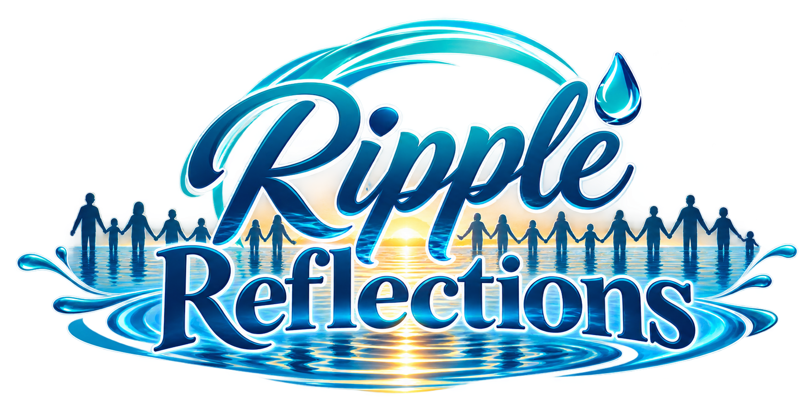

Ripple Reflections is a 10-part conversation series created to openly explore mental health with communities and groups who can face unique challenges, pressures, and barriers to mental-health support.
Through honest questions and real conversations, we want to create a space where people feel heard, understood, and comfortable talking about their experiences. Each segment focuses on a different community, because every person's story matters — and every voice has the potential to make a ripple.

A space for conversations about mental health with members of Indigenous communities. This segment creates an opportunity to listen, learn, and better understand the experiences, challenges, strengths, and perspectives that shape mental health within Indigenous communities.

Mental health conversations with people working in trades and construction — from those working directly on the tools to project managers, supervisors, coordinators, and the many people behind the scenes who keep the industry moving.
We want to talk openly about the pressures of the industry, workplace culture, stress, resilience, and what it means to look after the people behind the work.

A space for conversations with people who are unhoused or experiencing housing insecurity.
This segment looks beyond the circumstances of someone’s housing situation and creates an opportunity to hear their experiences, challenges, hopes, and perspectives — while bringing greater understanding and compassion to the conversation around mental health and homelessness.

Recovery can look different for everyone.
This segment opens up conversations about mental health with people who are in recovery from addiction, giving them an opportunity to share their experiences, challenges, successes, setbacks, and the realities of their journey.

Mental health conversations with people working in education — including teachers, teaching assistants, administrators, and other education professionals.
This segment explores the experiences and pressures that can come with supporting others every day, while also recognizing the importance of supporting the people who help our communities learn and grow.

When someone is experiencing a crisis, there are people who answer the call.
Ripple Response opens conversations with those who help others through some of their most difficult moments — including police officers, firefighters, paramedics, doctors, nurses, administrative staff, and other crisis-response professionals.
We want to look beyond the uniform or job title and talk about the people behind the response.

A space dedicated to conversations with military veterans.
This segment explores mental health, service, transition, resilience, identity, and the experiences that can continue long after someone’s time in uniform has ended.

Mental health conversations with people living with accessibility needs and chronic pain.
This segment explores the experiences, challenges, adaptations, and strengths of people navigating a world that doesn't always accommodate them — while creating space for honest conversations about the connection between physical challenges, accessibility, and mental health.

A space for LGBTQ+ communities and voices.
This segment creates an opportunity for open conversations about mental health, identity, acceptance, belonging, relationships, and the experiences that can shape someone's journey. Most importantly, it creates a space where people can share their stories and know that their voices matter.

Young people have perspectives, experiences, and ideas that deserve to be heard.
Young Voices, Big Ripples creates a space for youth and young adults to openly talk about mental health, the pressures they face, their experiences, their hopes, and the changes they want to see in their communities.
Because sometimes, the smallest voice can make the biggest ripple.